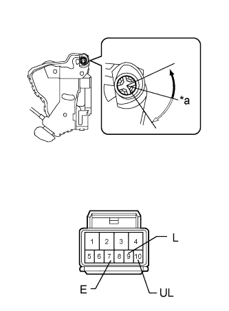

POWER DOOR LOCK CONTROL SYSTEM > All Doors LOCK/UNLOCK Functions do not Operate Via Master Switch, Driver Side Door Key Cylinder |
| 1.CHECK DOOR LOCK OPERATION |
Check the door lock operation.
| Result | Proceed to |
| No doors can be locked using multiplex network master switch | A |
| No doors can be locked using key-linked switch | B |
|
| ||||
| A | ||
| ||
| 2.READ VALUE USING INTELLIGENT TESTER (KEY-LINKED SWITCH) |
Use the Data List to check if the door key-linked switches is functioning properly (Click here).
| Tester Display | Measurement Item/Range | Normal Condition | Diagnostic Note |
| Door Key SW-Lock | Driver side door key-linked switch lock signal / ON or OFF | ON: Driver side door key cylinder turned to lock position OFF: Driver side door key cylinder not turned to lock position | - |
| D Door Key SW-UL | Driver side door key-linked switch unlock signal / ON or OFF | ON: Driver side door key cylinder turned to unlock position OFF: Driver side door key cylinder not turned to unlock position | - |
|
| ||||
| OK | ||
| ||
| 3.INSPECT FRONT DOOR LOCK ASSEMBLY LH (KEY-LINKED SWITCH) |
|  |
Remove the front door lock (Click here).
Measure the resistance according to the value(s) in the table below.
| Tester Connection | Condition | Specified Condition |
| 9 (L) - 7 (E) | Lock | Below 1 Ω |
| 9 (L) - 7 (E) | Off | 10 kΩ or higher |
| 10 (UL) - 7 (E) | Unlock | Below 1 Ω |
| 10 (UL) - 7 (E) | Off | 10 kΩ or higher |
| *a | Off |
 | Lock |
 | Unlock |
|
| ||||
| OK | |
| 4.CHECK HARNESS AND CONNECTOR (FRONT DOOR LOCK ASSEMBLY LH - MAIN BODY ECU AND BODY GROUND) |
Disconnect the K5 door lock connector.
Remove the G47 main body ECU (Click here).
Measure the resistance according to the value(s) in the table below.
| Tester Connection | Condition | Specified Condition |
| K5-10 (UL) - G47-24 (UL3) | Always | Below 1 Ω |
| K5-9 (L) - G47-11 (L2) | Always | Below 1 Ω |
| K5-7 (E) - Body ground | Always | Below 1 Ω |
| K5-10 (UL) - Body ground | Always | 10 kΩ or higher |
| K5-9 (L) - Body ground | Always | 10 kΩ or higher |
|
| ||||
| OK | ||
| ||